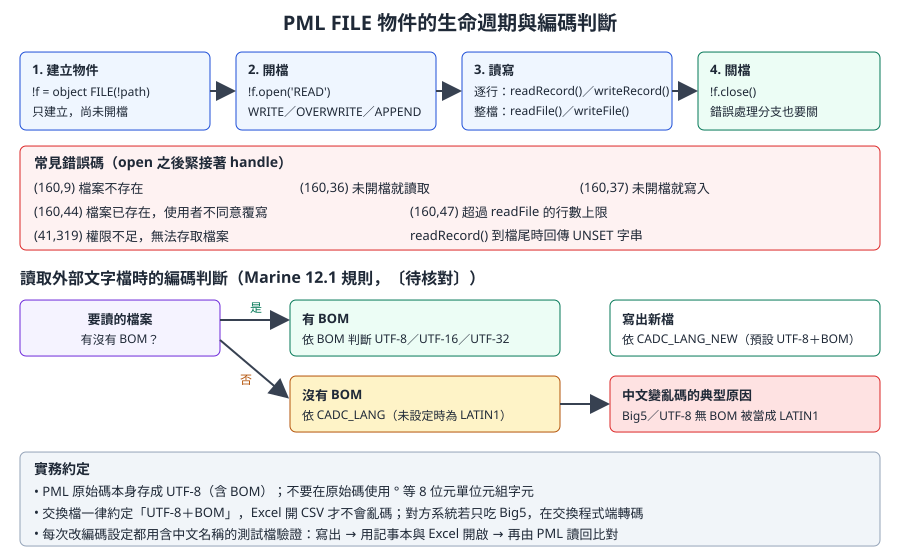
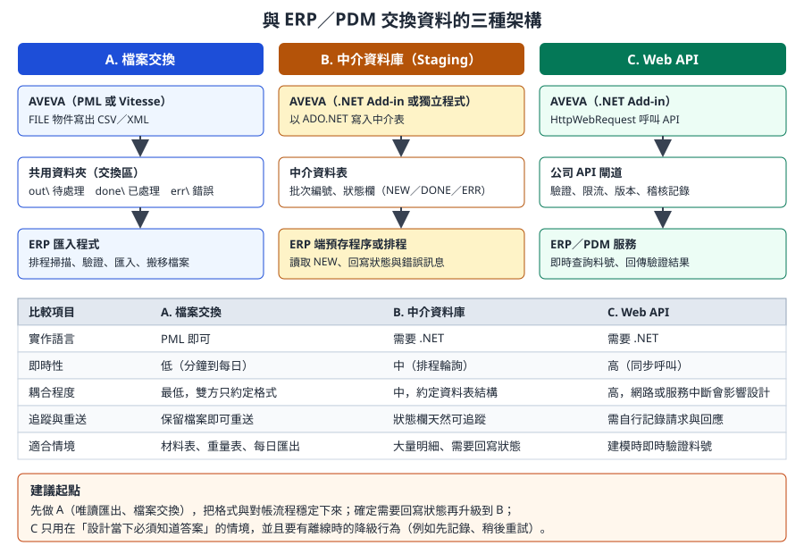

第 16 章 報表、檔案與外部系統整合
本章處理「資料離開 AVEVA」與「資料進入 AVEVA」兩個方向：用 PML 的
FILE物件讀寫文字檔、處理中文編碼、輸出 CSV 與 Excel、讀取外部標準資料來驅動建模，以及與 ERP／PDM 交換資料時的架構選擇和排程批次。資料可信度：
FILE物件的開檔模式、讀寫方法與錯誤碼，取自 AVEVA 官方 PML Customisation User Guide 與 Software Customisation Reference Manual（help.aveva.com 上的 E3D 2.1 版本，PML 語法與 Marine 12.1 相同系譜）。編碼規則中的環境變數（CADC_LANG、CADC_LANG_NEW）來自開源知識庫 aveva-marine-dev-skill 對 PDMS 12.1 使用手冊的摘錄，標為〔待核對〕。整合架構與排程是一般系統整合的工程實務，本章依 AVEVA 的限制調整；凡涉及 AVEVA 批次啟動參數的部分都標為〔待核對〕。程式碼除了來自examples/的部分外，都標示「示意」。
16.1 學習目標
讀完本章，你應該能夠：
- 使用 PML
FILE物件以正確的模式開檔、逐行或整檔讀寫，並處理常見錯誤碼。 - 說明中文在 AVEVA 中出現亂碼的原因，並訂出公司的編碼約定。
- 產生格式正確的 CSV（含逗號與引號跳脫），以及從表格控制項匯出 Excel。
- 設計「讀外部資料、驗證、預覽、再建模」的資料驅動工具。
- 比較檔案交換、中介資料庫、Web API 三種整合架構，選出適合的方案。
- 規劃排程與批次執行，並知道哪些環節需要在公司環境驗證。
16.2 輸出管道總覽
| 管道 | 寫法 | 適合 | 注意 |
|---|---|---|---|
| 命令列 | $P、q var |
開發時檢查 | 不是給使用者的輸出 |
| 訊息框 | !!alert.message() |
簡短結果 | 會阻斷操作；不要在迴圈中使用 |
| 表單表格 | NETGRIDCONTROL（第 13 章） |
互動檢視、排序、篩選 | 大量資料時注意效能 |
| 文字檔、CSV | FILE 物件 |
交換、存檔、給 Excel | 編碼與跳脫 |
| Excel 檔 | 表格控制項的匯出功能，或 .NET | 直接給使用者 | 版本與授權 |
| 系統內建報表 | 第 9 章的報表功能 | 標準材料表 | 客製化程度有限 |
| 外部資料庫、API | .NET（第 14 章） | 系統整合 | 帳號、網路、重送 |
開發人員須知： 報表工具幾乎都是唯讀的，是最適合新手開始的工具類型（第 18 章的優先順序第 1 名）。但「唯讀」只是對 AVEVA 模型而言；把檔案寫到共用資料夾、寫進外部資料庫，仍然會影響別人。輸出位置、命名與保存期限要先講好。
16.3 PML FILE 物件
16.3.1 生命週期

圖 16-1 FILE 物件的生命週期、錯誤碼與編碼判斷。（本課程自繪，錯誤碼依官方 PML Customisation User Guide）
object FILE(路徑) 只建立物件，不會開檔。開檔模式：
| 模式 | 行為 |
|---|---|
READ |
讀取；檔案不存在時錯誤 (160,9) |
WRITE |
寫入新檔；檔案已存在時會跳出確認對話框，使用者拒絕時錯誤 (160,44) |
OVERWRITE |
直接覆寫，不詢問 |
APPEND |
加在檔尾 |
批次或排程工具不能有對話框，所以輸出檔請用 OVERWRITE（或檔名加時間戳記搭配 WRITE）。
16.3.2 常用方法
| 方法 | 用途 |
|---|---|
open(模式)、close()、isOpen()、accessMode() |
開關檔與狀態 |
readRecord() |
讀一行，回傳 STRING；到檔尾時回傳 UNSET 字串，用 .set() 或 .unset() 判斷 |
writeRecord(字串) |
寫一行 |
readFile() |
整檔讀成字串陣列，預設上限 10000 行，可傳入行數上限；超過時錯誤 (160,47) |
writeFile(模式, 陣列) |
把字串陣列整批寫出 |
exists()、size()、dtm() |
檔案是否存在、大小、修改時間 |
copy()、move()、deleteFile() |
檔案操作（請小心使用） |
files()、subDirs() |
當 FILE 指向目錄時，列出檔案與子目錄 |
〔待核對〕上表中檔案操作與目錄列舉的方法名稱，來自開源知識庫整理的參考手冊摘要，請在公司版本用 q meth !f 確認。
16.3.3 讀檔：逐行與整檔
-- 示意：逐行讀取，適合大檔或需要邊讀邊處理
define function !!mycoReadLines(!path is STRING) is ARRAY
!result = ARRAY()
!f = object FILE(!path)
!f.open('READ')
handle (160,9)
!!alert.error('找不到檔案：' & !path)
return !result
elsehandle (41,319)
!!alert.error('沒有權限讀取：' & !path)
return !result
endhandle
do
!line = !f.readRecord()
break if (!line.unset())
!result.append(!line)
enddo
!f.close()
return !result
endfunction
| 重點 | 說明 |
|---|---|
handle 緊接在 open 之後 |
PML 的錯誤只能被下一行的 handle 攔截（第 11 章） |
開放式 do ... enddo 一定要有 break if |
否則是無窮迴圈 |
以 .unset() 判斷檔尾 |
readRecord() 到檔尾回傳 UNSET，不是空字串；空白行會回傳空字串，兩者不同 |
整檔讀取比較簡短：
-- 示意：整檔讀取，檔案不超過 readFile 的行數上限時使用
!f = object FILE(!path)
!lines = !f.readFile()
handle (160,9)
!!alert.error('找不到檔案：' & !path)
return
endhandle
16.3.4 寫檔
-- 示意：整批寫出；先組好陣列，再一次寫入，減少檔案操作
!lines = ARRAY()
!lines.append('Name,Description')
!lines.append('/E-101,Main pump')
!f = object FILE('C:\temp\myco_out.csv')
!f.writeFile('OVERWRITE', !lines)
handle any
!!alert.error('寫檔失敗：' & !!error.text)
endhandle
專業提醒： 輸出路徑不要寫死在程式碼中。可以讓使用者用檔案對話框選擇（知識庫提到官方用
object PMLFILEBROWSER('SAVE')〔待核對〕），或從公司設定檔讀取預設目錄。寫到共用資料夾前，先確認使用者帳號有寫入權限，錯誤 (41,319) 就是權限不足。
16.4 文字編碼：中文為什麼會變亂碼
中文名稱、描述、UDA 值在 AVEVA 內部顯示正常，輸出到檔案或讀入外部檔案時卻變成亂碼，幾乎都是同一段位元組被用不同的編碼解讀。
16.4.1 規則整理
依開源知識庫摘錄的 PDMS 12.1 使用手冊內容〔待核對〕：
| 對象 | 規則 |
|---|---|
| PML 原始碼檔案 | 只接受 UTF-8（含 BOM，優先）、UTF-16／UTF-32（含 BOM）或純 ASCII；不要使用 ° 這類 8 位元單位元組字元，在 CJK 語系環境會出錯 |
| 讀取外部文字檔 | 有 BOM 時依 BOM 判斷；沒有 BOM 時依環境變數 CADC_LANG（未設定時視為 LATIN1） |
| 寫出新檔 | 依環境變數 CADC_LANG_NEW（預設 UTF-8＋BOM），可設定為 CP950（Big5）等 |
| 轉碼 | 安裝目錄附有轉碼工具 transc.exe，PML 函式 !!pmlTranscFile 有封裝 |
16.4.2 公司約定建議
| 約定 | 原因 |
|---|---|
| PML 原始碼一律存 UTF-8 含 BOM | 編輯器、Git、AVEVA 三方一致 |
| 交換檔一律 UTF-8 含 BOM | Excel 依 BOM 判斷 CSV 編碼；沒有 BOM 的 UTF-8 CSV 在中文 Windows 的 Excel 會被當成 Big5 而亂碼 |
| 對方系統只吃 Big5 時，由交換程式端轉碼 | AVEVA 端維持單一編碼，轉換集中在一處 |
CADC_LANG 由系統管理員統一設定 |
每台電腦設定不同，同一支工具在不同人電腦結果不同，是最難查的問題 |
16.4.3 編碼驗證步驟
每次調整編碼設定、或新工具第一次輸出中文時，都跑一次：
- 在訓練專案建立一個描述含中文、全形符號與
°的測試元素（例如測試泵浦 φ100 45°）。 - 用工具輸出 CSV。
- 用記事本開啟，確認右下角顯示的編碼；用 Excel 直接開啟，確認中文正常。
- 用 PML 讀回該檔，與元素原本的描述比較是否完全相同。
- 把結果記錄在工具的測試紀錄（第 17 章）。
16.5 CSV 與 Excel 輸出
16.5.1 CSV 的跳脫規則
CSV 欄位含逗號、雙引號或換行時，整個欄位要用雙引號包起來，欄位內的雙引號要寫成兩個。設計者常在描述中使用逗號，忽略這條規則會讓欄位錯位。
-- 示意：mycocsvfield.pmlfnc
define function !!mycoCsvField(!value is STRING) is STRING
!s = !value
if (!s.match(',') gt 0 or !s.match('"') gt 0) then
!s = '"' & !s.replace('"', '""') & '"'
endif
return !s
endfunction
16.5.2 完整範例：設備清單 CSV
-- 示意：mycoexportequicsv.pmlfnc（唯讀）
-- 收集範圍內的 EQUI，輸出名稱、描述、位置
define function !!mycoExportEquiCsv(!scope is DBREF, !path is STRING) is REAL
!coll = object COLLECTION()
!coll.type('EQUI')
!coll.scope(!scope)
!items = !coll.results()
!lines = ARRAY()
!lines.append('Name,Description,Position')
do !e values !items
!row = !!mycoCsvField(!e.flnn) & ','
!row = !row & !!mycoCsvField(!e.desc) & ','
!row = !row & !!mycoCsvField(!e.pos.string())
!lines.append(!row)
enddo
!f = object FILE(!path)
!f.writeFile('OVERWRITE', !lines)
handle any
!!alert.error('寫檔失敗：' & !!error.text)
return 0
endhandle
return !items.size()
endfunction
使用方式：
!n = !!mycoExportEquiCsv(!!ce, 'C:\temp\equi_list.csv')
$P 已輸出 $!n 筆
| 設計 | 原因 |
|---|---|
| 參數傳入範圍與路徑 | 函式可被表單、排程、其他工具重複使用 |
| 先組陣列再一次寫出 | 減少檔案 I/O；寫檔失敗時不會留下半個檔案以外的副作用 |
| 回傳筆數 | 呼叫端可以記錄或顯示 |
位置用 .string() |
位置在 PML 是 POSITION 物件，輸出前要轉成字串；格式依目前單位設定〔待核對：是否要指定 WRT 與格式〕 |
16.5.3 從表格控制項匯出 Excel
第 13 章的 MyCollect 範例用 NETGRIDCONTROL 顯示資料，再呼叫匯出函式：
define method .export()
!!exportToExcel(!this.grid, ||, |Save EQUI List|)
endmethod
!!exportToExcel 是 AVEVA 內建的表格匯出函式〔待核對：依版本而定〕；表格控制項本身也有 saveGridToExcel(路徑) 方法（開源知識庫引自官方 NetGridExample 範例〔待核對〕）。

圖 16-2 MyCollect 的表單示意（依原始碼繪製，非實機截圖）。表格中的資料可直接匯出 Excel。
選擇方式：
| 方式 | 優點 | 缺點 |
|---|---|---|
| CSV | 最簡單，任何系統都能讀，適合交換 | 沒有格式、多工作表、公式 |
| 表格控制項匯出 | 使用者看到什麼就匯出什麼 | 需要表單；欄位格式受控制項限制 |
| .NET 產生 xlsx | 可控制格式、多工作表 | 需要相容 .NET 3.5 的函式庫並確認授權；不要在伺服器端使用 Office COM 自動化 |
16.6 讀取外部資料驅動建模
第 18 章的管支架案例把「每種管夾的尺寸」放在資料檔中，程式讀檔後建模，改尺寸不必改程式。這是資料與程式分離的基本做法。
16.6.1 流程
Excel（標準件尺寸表，由領域人員維護）
↓ 另存為 UTF-8 CSV，放到受控目錄
讀檔 → 解析 → 驗證 → 預覽 → 使用者確認 → 建模（訓練專案先測）→ 記錄
| 步驟 | 重點 |
|---|---|
| 來源 | 由誰維護、放在哪裡、怎麼審核版本；不要讓工具讀使用者桌面上的檔案 |
| 解析 | 第一行是標題；以欄名而非欄位位置取值，欄位順序調整時才不會錯 |
| 驗證 | 必填欄位、數值範圍、單位、重複鍵；任何一列不合格就整批停止並列出錯誤 |
| 預覽 | 在表單列出將建立的物件與尺寸；可用 AID 輔助圖形在 3D 中畫出位置（第 17 章） |
| 建模 | 先 Claim、建立、設定屬性；整批一個 MARKDB 標記，讓使用者可復原（第 12 章） |
| 記錄 | 寫入使用的資料檔版本、建立的元素名稱 |
16.6.2 範例：解析與驗證
假設尺寸表 clamp_std.csv：
type,dn,width,height,thk
CL-A,50,120,80,6
CL-A,80,150,95,8
CL-B,50,110,70,6
-- 示意：mycoloadclampstd.pmlfnc
-- 讀取尺寸表，回傳二維陣列；任何錯誤都記在 !errors
define function !!mycoLoadClampStd(!path is STRING, !errors is ARRAY) is ARRAY
!rows = ARRAY()
!f = object FILE(!path)
!lines = !f.readFile()
handle any
!errors.append('無法讀取 ' & !path & '：' & !!error.text)
return !rows
endhandle
-- 以標題決定欄位位置
!head = !lines[1].split(',')
!need = ARRAY()
!need.append('type')
!need.append('dn')
!need.append('width')
!need.append('height')
!need.append('thk')
!col = ARRAY()
do !k index !need
!pos = !head.findfirst(!need[!k])
if (!pos.unset()) then
!errors.append('缺少欄位：' & !need[!k])
return !rows
endif
!col[!k] = !pos
enddo
do !i from 2 to !lines.size()
if (!lines[!i].trim().empty()) then
skip
endif
!cells = !lines[!i].split(',')
!row = ARRAY()
!row[1] = !cells[!col[1]]
do !k from 2 to 5
!v = !cells[!col[!k]].real()
handle any
!errors.append('第 ' & !i.string() & ' 行的 ' & !need[!k] & ' 不是數字')
skip
endhandle
if (!v le 0) then
!errors.append('第 ' & !i.string() & ' 行的 ' & !need[!k] & ' 必須大於 0')
endif
!row[!k] = !v
enddo
!rows.append(!row)
enddo
return !rows
endfunction
〔待核對〕ARRAY.findfirst()、STRING.trim() 的確切名稱與回傳值，請在公司版本以 q meth 確認；若沒有 findfirst，可改用迴圈比對標題。
建模部分（只在訓練專案）：
-- 示意：依驗證通過的尺寸建立一個以 BOX 表示的管夾設備
-- 前提：CE 位於訓練專案中可寫的 ZONE，命名規則依公司標準
MARKDB 'MYCO create clamp'
NEW EQUI /MYCO-CLAMP-0001
NEW BOX
XLEN 120
YLEN 80
ZLEN 6
建模命令只是示意；實際的設備樣板、命名、位置與方向計算，請依第 7 章與公司標準設計，並且通過第 17 章的審查才能上線。
16.6.3 為什麼不直接讀 Excel 檔
| 理由 | 說明 |
|---|---|
| 依賴少 | 讀 xlsx 需要 .NET 與額外函式庫；CSV 用 PML 就能讀 |
| 可審查 | CSV 是文字，可放進 Git 比對版本差異 |
| 不受 Excel 版本與巨集影響 | 合併儲存格、隱藏欄、公式結果都可能讓程式讀錯 |
建議讓領域人員在 Excel 維護，發佈時「另存為 CSV UTF-8」並放進受控目錄或 Git。
16.7 與 ERP／PDM 交換資料
16.7.1 三種架構

圖 16-3 三種整合架構的比較與建議起點。（本課程自繪）
| 架構 | AVEVA 端 | 外部端 | 典型用途 |
|---|---|---|---|
| A. 檔案交換 | PML 寫 CSV／XML 到交換資料夾 | 排程程式匯入，處理後搬到 done 或 err |
材料表、重量重心表、每日匯出 |
| B. 中介資料庫 | .NET 寫入中介資料表 | ERP 端讀取狀態為 NEW 的資料，回寫結果 | 大量明細、需要狀態回饋 |
| C. Web API | .NET 呼叫公司 API | ERP／PDM 服務即時回應 | 建模時驗證料號、查詢庫存 |
16.7.2 資料契約：比技術更重要
整合失敗的主因通常不是程式，而是雙方對資料的定義不同。開工前先寫好資料契約：
| 項目 | 要回答的問題 |
|---|---|
| 鍵值對應 | AVEVA 的哪個屬性對應 ERP 料號？是目錄元件、等級、UDA，還是名稱規則？（第 8 章） |
| 粒度 | 一列是一個元件、一條管線，還是一個材料彙總？ |
| 單位 | 長度 mm 或 m？重量 kg？口徑以 DN 或英寸？ |
| 版本 | 同一設計物件被修改後再次匯出，ERP 如何更新而不是重複新增？ |
| 刪除 | 設計中刪除的物件，如何通知 ERP？ |
| 批次識別 | 每次匯出有批次編號與時間，方便對帳與重送 |
| 錯誤回饋 | ERP 拒收的資料，誰處理、怎麼通知設計者？ |
| 冪等性 | 同一批資料送兩次，結果要與送一次相同 |
開發人員須知： 設計資料在 AVEVA 中會持續變動，而 ERP 通常需要「某一時點、經過審核」的資料。比較好的做法是只匯出已發行狀態的資料（依公司的發行屬性或流程判斷），而不是任何時刻的工作中資料。這和第 6 章「生產資料是模型的快照」是同一個觀念。
16.7.3 .NET 寫入中介資料表
// 示意：.NET 3.5 寫入中介資料表；連線字串由設定檔讀取，使用 Windows 驗證
using System;
using System.Data;
using System.Data.SqlClient;
public static class StagingWriter
{
public static void WriteBatch(string connStr, string batchId, DataTable rows)
{
using (SqlConnection cn = new SqlConnection(connStr))
{
cn.Open();
using (SqlTransaction tx = cn.BeginTransaction())
{
foreach (DataRow r in rows.Rows)
{
using (SqlCommand cmd = new SqlCommand(
"INSERT INTO aveva_mto_staging (batch_id, item_code, qty, unit, status) " +
"VALUES (@b, @c, @q, @u, 'NEW')", cn, tx))
{
cmd.Parameters.AddWithValue("@b", batchId);
cmd.Parameters.AddWithValue("@c", r["item_code"]);
cmd.Parameters.AddWithValue("@q", r["qty"]);
cmd.Parameters.AddWithValue("@u", r["unit"]);
cmd.ExecuteNonQuery();
}
}
tx.Commit(); // 整批成功才提交，失敗時自動回滾
}
}
}
}
| 設計 | 原因 |
|---|---|
| 參數化查詢 | 避免 SQL 注入與引號問題 |
| 整批一個交易 | ERP 端不會讀到一半的批次 |
狀態欄 NEW |
ERP 端處理後改成 DONE 或 ERR，可追蹤與重送 |
| 連線字串不寫在程式中 | DLL 可被反編譯（第 14 章） |
16.7.4 Web API 的注意事項
- .NET 3.5 預設不支援較新的 TLS 版本，呼叫只接受 TLS 1.2 的 API 可能失敗，需要 Windows 更新與程式設定配合〔待核對：公司環境的 .NET 3.5 修補狀態〕。必要時改由公司內部的中介服務轉呼叫。
- 呼叫要設定逾時，並在背景執行，不要卡住 AVEVA 的畫面（第 14 章的執行緒提醒）。
- API 無法連線時，工具要能降級：記錄待送資料、提示使用者，而不是讓設計作業停擺。
16.8 排程與批次執行
16.8.1 四種執行方式
| 方式 | 說明 | 適合 | 待確認 |
|---|---|---|---|
| 使用者觸發的批次 | 表單按鈕啟動，在使用者的工作階段執行，顯示進度 | 數十到數百個物件的處理 | 無 |
| 命令列模式啟動模組 | 以批次檔啟動模組（不開圖形介面或最小化），登入後執行巨集，結束後離開 | 夜間報表 | 啟動參數、登入方式〔待核對〕 |
| .NET 獨立程式 | 依官方 Samples\ImportDXF 的結構，以 PdmsStandalone 開啟專案與 MDB 後操作 |
資料轉檔、整合 | 授權與環境〔待核對〕 |
| Windows 工作排程器 | 定時呼叫上兩者 | 每日匯出 | 執行帳號與網路磁碟權限 |
16.8.2 使用者觸發的批次：進度與中斷
-- 示意：依開源知識庫整理的 FMSYS 進度寫法〔待核對〕
-- !!fmstop 是一張只有「停止」按鈕的小表單，需另外定義
!!FMSYS.setInterrupt(!!fmstop.stopButton)
do !i index !items
-- 處理 !items[!i]
!!FMSYS.setProgress(!i * 100 / !items.size())
if (!!FMSYS.interrupt()) then
break
endif
enddo
!!FMSYS.setProgress(0)
16.8.3 夜間批次的設計原則
@echo off
rem 示意：每日匯出排程的外殼。AVEVA 端的啟動與登入方式請依公司版本設定〔待核對〕
setlocal
set STAMP=%DATE:~0,4%%DATE:~5,2%%DATE:~8,2%
set LOG=\\toolsrv\aveva_jobs\logs\daily_mto_%STAMP%.log
set OUT=\\toolsrv\aveva_jobs\out
echo [%TIME%] start >> "%LOG%"
rem 1. 以公司批次帳號、唯讀 MDB 啟動模組並執行匯出巨集（此行依公司環境填寫）
rem call <公司啟動批次檔> <模組> <登入參數> <執行巨集>
if errorlevel 1 (
echo [%TIME%] AVEVA job failed >> "%LOG%"
exit /b 1
)
rem 2. 確認輸出檔存在且非空，再交給 ERP 匯入程式
for %%F in ("%OUT%\mto_%STAMP%.csv") do if %%~zF GTR 0 (
echo [%TIME%] output ok %%~zF bytes >> "%LOG%"
) else (
echo [%TIME%] output missing or empty >> "%LOG%"
exit /b 2
)
echo [%TIME%] done >> "%LOG%"
endlocal
| 原則 | 原因 |
|---|---|
| 使用專用批次帳號與唯讀 MDB | 報表不需要寫入；避免與設計者的 Claim 衝突 |
| 排在無人作業的時段，並考慮 Global 同步時間 | 讀到的是一致的資料 |
| 每一步寫記錄、檢查結果 | 夜間失敗要在早上被發現，而不是等使用者抱怨 |
| 輸出先寫暫存檔再改名 | 下游程式不會讀到寫到一半的檔案 |
| 確認授權數 | 批次啟動模組會占用授權，可能影響白天的使用者〔待核對：公司授權方式〕 |
專業提醒： 開源知識庫提到 PML 的
PMLUSERLOGIN物件可產生加密的自動登入巨集，以及 .NET 的PdmsStandalone.Open(專案, 帳號, 密碼, MDB)可開啟專案〔待核對〕。無論哪一種，都不要把明文密碼寫在批次檔或程式中，請與系統管理員討論帳號管理方式。
16.9 開發人員須知
- 輸出是契約。 報表欄位一旦被下游使用，就不能任意改名、改順序或改單位。需要調整時增加版本號或新欄位。
- 大量資料先收集再寫。 先用
COLLECTION收集、組好陣列，再一次writeFile；不要在迴圈中反覆開關檔案。 - 缺值不是 0。 屬性未設定時輸出空白，並在報表說明中定義。
- 中文測試要常態化。 每個會輸出文字的工具，測試資料都要包含中文與特殊符號。
- 整合先唯讀。 先從 AVEVA 單向匯出開始；要把外部資料寫回 AVEVA，屬於第 18 章優先順序中的高風險工具。
- 路徑與帳號都來自設定。 共用目錄、資料庫連線、API 位址，放在受控的設定檔，部署時依環境（測試、試用、正式）切換。
16.10 練習（只能在訓練專案）
- 逐行讀檔。 寫一個函式，讀取一個含空白行的文字檔，統計總行數與空白行數。確認你能區分「空白行」與「檔尾」。
- CSV 跳脫。 在訓練專案中建立描述含逗號與雙引號的設備，用 16.5.2 的函式輸出，再用 Excel 開啟確認欄位沒有錯位。
- 編碼驗證。 依 16.4.3 的步驟完成一次編碼驗證，記下你電腦上
CADC_LANG與CADC_LANG_NEW的值（用q evar CADC_LANG）。 - 資料驅動。 依 16.6.2 讀取尺寸表，故意在一列放入非數字與負數，確認錯誤清單正確且整批不建模。
- 整合設計。 針對你們公司的一個 ERP 交換需求，填完 16.7.2 的資料契約表，並選擇 A、B、C 其中一種架構，寫出理由。
16.11 自我檢核
- [ ] 我知道
WRITE與OVERWRITE的差別，以及批次工具為什麼不能用會跳對話框的模式。 - [ ] 我能用
readRecord()與.unset()正確判斷檔尾，並說出readFile()的行數上限。 - [ ] 我能列出 (160,9)、(160,44)、(160,47)、(41,319) 的意義。
- [ ] 我能解釋中文亂碼的原因，並說明 BOM、
CADC_LANG與 Excel 開啟 CSV 的關係。 - [ ] 我能寫出正確跳脫逗號與雙引號的 CSV 輸出。
- [ ] 我能設計「讀檔、驗證、預覽、確認、建模、記錄」的資料驅動流程。
- [ ] 我能比較檔案交換、中介資料庫、Web API 的優缺點，並寫出資料契約。
- [ ] 我知道夜間批次需要唯讀 MDB、記錄、結果檢查與授權確認。
資料來源
- AVEVA E3D 2.1 PML Customisation User Guide（官方，PML 語法與 Marine 12.1 同系譜）：檔案讀取、FILE 物件錯誤處理與錯誤碼、檔案處理章節
- AVEVA E3D 2.1 Software Customisation Reference Manual：FILE 物件
- 開源知識庫 aveva-marine-dev-skill（MIT）：《AVEVA-Marine-PML開發技能》（編碼規則、FMSYS 進度）、《Marine-PML對象API字典精要》（FILE 方法）、《Marine-PML錯誤碼速查》、《AVEVA-Marine-NET-API用法Cookbook》（
ImportDXF獨立程式結構、NetGridExample）。 - 範例：
examples/starter-kit-mycollect/（MIT，同上）。 - 案例：eryar，AVEVA MARINE 中用 PML 寫管支架程序（二）（資料檔驅動建模）。
- CSV 格式：RFC 4180。